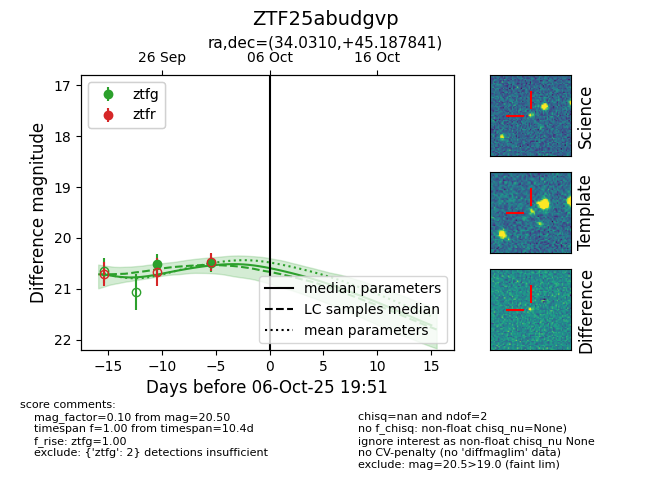
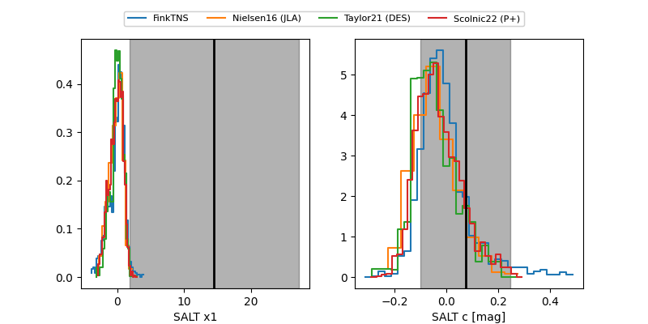

FINK: ZTF25abudgvp
Lasair: ZTF25abudgvp
ALeRCE: ZTF25abudgvp
ZTF25abudgvp (ztf,fink)
equatorial (ra, dec) = (34.0310,+45.18784)
galactic (l, b) = (138.2224,-15.15482)


last ztfg=20.50
2 ztfg detections